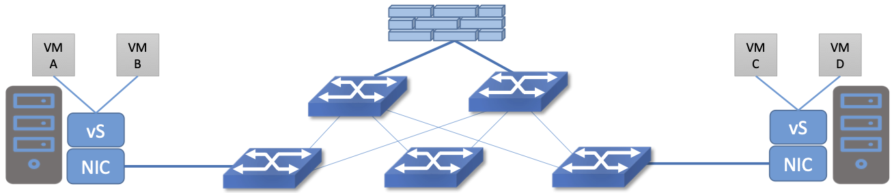

Perspective: Is Security Getting Worse or Better?
Security breaches are now a standard risk of connecting any system to the Internet, and it is rare for a week to go by without news of some new attack. Verizon, a large telco, conducts an annual review of the state of cyber-attacks; in 2024 they reached a milestone with over 10,000 incidents, such as ransomware and phishing attacks, covered in the report. Measured by number of attacks then, it seems that things are getting worse. By contrast, an analysis of the economic impact of cyber-attacks performed by The Economist argued that the peak days of cyber-attacks might be behind us. The worst era for attacks in their economic analysis was 2003–2004 by a large margin.
There are certainly some respects in which security is improving. This can be attributed both to greater awareness of the need for strong security whenever important information is being handled, and the development of new techniques that enable better security practices.
One example of a technology development that improved security implementations is SDN (software-defined networking). SDN has enabled a relatively new approach to providing isolation among systems known as microsegmentation.
Microsegmentation stands in contrast to traditional approaches to segmenting networks, in which large sets of machines connect to a “zone” and firewalls are used to filter traffic passing between zones. While this makes for relatively simple network configuration, it means that lots of machines are in the same zone even if there was no need for them to communicate. Furthermore, the complexity of firewall rules grows over time as more and more rules need to be added to describe the traffic allowed to pass from one zone to another.
By contrast, SDN allows for the creation of precisely defined virtual networks—microsegments—that determine both which machines can communicate with each other and how they can do so. For example, a three-tier application can have its own microsegmentation policy which states: machines in the web-facing tier of the application can talk to the machines in the application tier on some set of specified ports, but web-facing machines may not talk to each other. This is a policy that was difficult to implement in the past;instead all the web-facing machines would sit on the same network segment, free to communicate with each other.
The complexity of configuring segments was the reason that machines from many applications would likely sit on the same segment, creating opportunities for an attack to spread from one application to another. The lateral movement of attacks within datacenters has been well documented as a key strategy of successful cyberattacks over many years.
Consider the arrangement of VMs and the firewall in Figure 214. Suppose that we wanted to put VM A and VM B in different segments and apply a firewall rule for traffic going from VM A to VM B. We have to prevent VM A from sending traffic directly to VM B. To do this, we could configure two VLANs in the physical network, connect A to one of them, and B to the other, and then configure the routing such that the path from the first VLAN to the second passes through the firewall. If at some point VM A was moved to another server, we’d then have to make sure the appropriate VLAN reached that server, connect VM A to it, and ensure that the routing configuration still forces traffic through the firewall. This situation may seem a little contrived, but it demonstrates why microsegmentation was challenging to implement before the arrival of SDN. By contrast, SDN allows the firewall function to be implemented in each virtual switch (vS in the figure). Thus, traffic from VM A to VM B passes through the firewall without any special routing configuration. It is the job of the SDN controller to create the appropriate firewall rule to enforce the desired isolation between VM A and VM B (and deal with movements of VM A and VM B if they occur). There is no magic, but SDN gives us a new tool to make a finer degree of isolation much easier to manage.
{kind=link}

Figure 214. A set of virtual machines communicate through a firewall
The development of microsegmentation over the last decade was one of the major drivers of SDN adoption in the enterprise. It became the basis for a best practice in security known as “zero-trust” networking. Zero trust means that, as much as possible, every system in the network is assumed to be untrusted, and hence should be isolated from all other systems aside from precisely those systems it needs access to in order to do its assigned job.
The importance of the Internet in the running of critical systems and as the underpinning for much of the world’s commerce has made it an attractive target for hackers. At the same time it drives home the need to develop and adopt best practices such as zero-trust networking. When we read of breaches today, it is often the case that some best practice has not been followed. The Verizon cybersecurity report, by documenting what has gone wrong in thousands of attacks, provides useful information about how many of those attacks could be prevented through using established cyber-hygiene techniques.
Broader Perspective
Verizon’s data breach report can be obtained from Data Breach Investigations Report.
The economic impact of cyber-attacks is analyzed by The Economist in this article: Unexpectedly, the cost of big cyber-attacks is falling, May 2024.
A deeper discussion on the use of SDN techniques to improve security is provided in Chapter 8 of our book Software-Defined Networking: A Systems Approach.